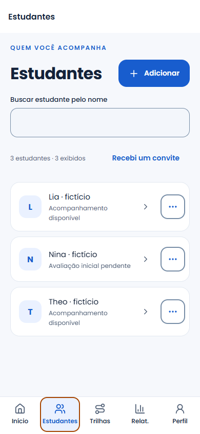
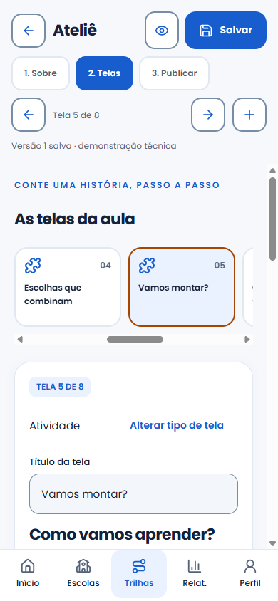
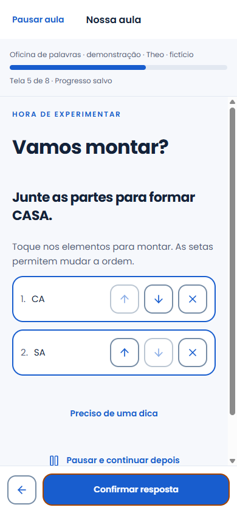
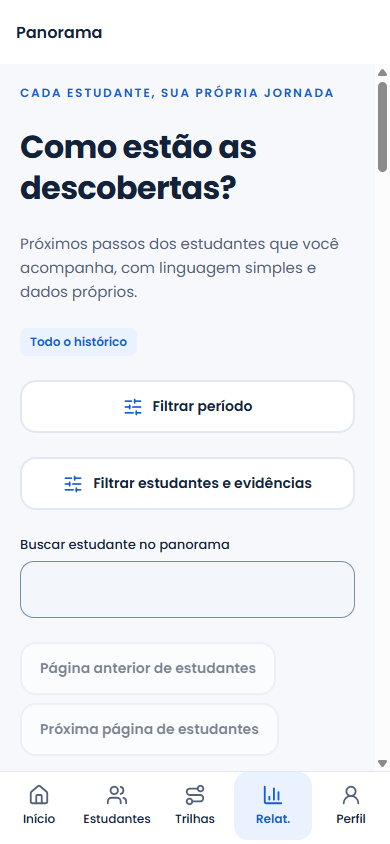

Estudantes, sem excesso de ações

Nome abre a jornada. Três pontos reúne ações secundárias; busca e cadastro ficam acessíveis no cabeçalho.
Capturas reais da aplicação web em tamanho de celular. Dados fictícios persistidos. Não são imagens de APK.

Nome abre a jornada. Três pontos reúne ações secundárias; busca e cadastro ficam acessíveis no cabeçalho.

Telas ordenadas, prévia e rascunho. Salvar, navegar e adicionar não dependem de chegar ao fim do formulário.

Posição e rascunho recuperados. Botões substituem arrastar; a ação principal permanece no rodapé.

Contagens vêm das evidências salvas. Não há percentual inventado de alfabetização ou diagnóstico automático.